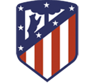

Equipos lideres de LaLiga
Actualmente en la liga los equipos lideres son:
- ATLÉTICO DE MADRID
- REAL MADRID
- FC BARCELONA
- SEVILLA FC
Equipos que han sido campeones mas veces:
- Real Madrid
- FC Barcelona
- Atletico de Madrid
- Athletic Club
Historia del equipo:
- Real Madrid
El Real Madrid Club de Fútbol, más conocido simplemente como Real Madrid, es una entidad polideportiva con sede en Madrid, España. Fue declarada oficialmente registrada como club de fútbol por sus socios el 6 de marzo de 1902 con el objeto de la práctica y desarrollo de este deporte —si bien sus orígenes datan al año 1900,8 y su denominación de (Sociedad) Madrid Foot-ball Club a noviembre de 1901— siendo el quinto club fundado en la capital.n. 3 Tuvo a Julián Palacios y los hermanos Juan Padrós y Carlos Padrós como principales valedores de su creación. Identificado por su color blanco —del que recibe el apelativo de «blancos» o «merengues»—,12 es uno de los cuatro clubes profesionales de fútbol del país cuya entidad jurídica no es la de sociedad anónima deportiva (S. A. D.),n. 4 ya que su propiedad recae en sus más de 100 000 socios.
- FC Barcelona
El Fútbol Club Barcelona (en catalán, Futbol Club Barcelona), conocido popularmente como Barça,n. 1 es una entidad polideportiva con sede en Barcelona, España. Fue fundado como club de fútbol el 29 de noviembre de 1899 y registrado oficialmente el 5 de enero de 1903.8910 Es uno de los cuatro clubes profesionales de España junto a Real Madrid Club de Fútbol, Athletic Club y Club Atlético Osasuna que no es sociedad anónima deportiva (S. A. D.), de manera que la propiedad del club recae en sus socios.
- Atletico de Madrid
El Club Atlético de Madrid es un club de fútbol español de la ciudad de Madrid, fundado el 26 de abril de 1903, siendo por ello uno de los clubes de fútbol activos más longevos de España. Desde la temporada 2017-18 disputa sus partidos como local en el Estadio Wanda Metropolitano, con capacidad para 68 456 espectadores. Identificado por sus colores rojos y blancos —de los que recibe el apelativo de «rojiblancos» o «colchoneros»—,1 es uno de los clubes españoles más laureados, superando la treintena entre títulos nacionales e internacionales. Su primer equipo masculino ha disputado 84 temporadas en el Campeonato Nacional de Liga de Primera División, siendo uno de los diez clubes fundadores de la competición y participantes en la edición inaugural de 1929.
- Athletic Club
El Athletic Club, popularmente conocido también como Athletic de Bilbao6 o simplemente Athletic,7 es un club de fútbol de la villa de Bilbao, País Vasco, España. Fue fundado en 1898 y es, junto al Real Madrid Club de Fútbol y al Fútbol Club Barcelona, el único club que ha disputado todas las ediciones de la Primera División de España desde su creación en 1928. A su vez, es uno de los cuatro únicos clubes profesionales de España que no es una sociedad anónima deportiva, de manera que el gobierno del club recae en sus socios. La particularidad más destacada del club vasco es su tradición de jugar únicamente con jugadores nacidos o formados futbolísticamente en Euskal Herria,1 tradición que surgió en 1912 y se ha mantenido desde entonces.89 También es reconocido históricamente por ser un club de cantera y trabajar en la formación de jóvenes futbolistas, siendo esta la principal fuente de abastecimiento de jugadores para el primer equipo.
- Real Madrid
- El Real Madrid Club de Fútbol, más conocido simplemente como Real Madrid, es una entidad polideportiva con sede en Madrid, España. Fue declarada oficialmente registrada como club de fútbol por sus socios el 6 de marzo de 1902 con el objeto de la práctica y desarrollo de este deporte —si bien sus orígenes datan al año 1900,8 y su denominación de (Sociedad) Madrid Foot-ball Club a noviembre de 1901— siendo el quinto club fundado en la capital.n. 3 Tuvo a Julián Palacios y los hermanos Juan Padrós y Carlos Padrós como principales valedores de su creación. Identificado por su color blanco —del que recibe el apelativo de «blancos» o «merengues»—,12 es uno de los cuatro clubes profesionales de fútbol del país cuya entidad jurídica no es la de sociedad anónima deportiva (S. A. D.),n. 4 ya que su propiedad recae en sus más de 100 000 socios.
- FC Barcelona
- El Fútbol Club Barcelona (en catalán, Futbol Club Barcelona), conocido popularmente como Barça,n. 1 es una entidad polideportiva con sede en Barcelona, España. Fue fundado como club de fútbol el 29 de noviembre de 1899 y registrado oficialmente el 5 de enero de 1903.8910 Es uno de los cuatro clubes profesionales de España junto a Real Madrid Club de Fútbol, Athletic Club y Club Atlético Osasuna que no es sociedad anónima deportiva (S. A. D.), de manera que la propiedad del club recae en sus socios.
- Atletico de Madrid
- El Club Atlético de Madrid es un club de fútbol español de la ciudad de Madrid, fundado el 26 de abril de 1903, siendo por ello uno de los clubes de fútbol activos más longevos de España. Desde la temporada 2017-18 disputa sus partidos como local en el Estadio Wanda Metropolitano, con capacidad para 68 456 espectadores. Identificado por sus colores rojos y blancos —de los que recibe el apelativo de «rojiblancos» o «colchoneros»—,1 es uno de los clubes españoles más laureados, superando la treintena entre títulos nacionales e internacionales. Su primer equipo masculino ha disputado 84 temporadas en el Campeonato Nacional de Liga de Primera División, siendo uno de los diez clubes fundadores de la competición y participantes en la edición inaugural de 1929.
- Athletic Club
- El Athletic Club, popularmente conocido también como Athletic de Bilbao6 o simplemente Athletic,7 es un club de fútbol de la villa de Bilbao, País Vasco, España. Fue fundado en 1898 y es, junto al Real Madrid Club de Fútbol y al Fútbol Club Barcelona, el único club que ha disputado todas las ediciones de la Primera División de España desde su creación en 1928. A su vez, es uno de los cuatro únicos clubes profesionales de España que no es una sociedad anónima deportiva, de manera que el gobierno del club recae en sus socios. La particularidad más destacada del club vasco es su tradición de jugar únicamente con jugadores nacidos o formados futbolísticamente en Euskal Herria,1 tradición que surgió en 1912 y se ha mantenido desde entonces.89 También es reconocido históricamente por ser un club de cantera y trabajar en la formación de jóvenes futbolistas, siendo esta la principal fuente de abastecimiento de jugadores para el primer equipo.
Real Madrid FC Barcelona Atletico de Madrid Athletic Club 

 
Si necesitas mas informacion sobre LaLiga,haz click en el link de abajo: